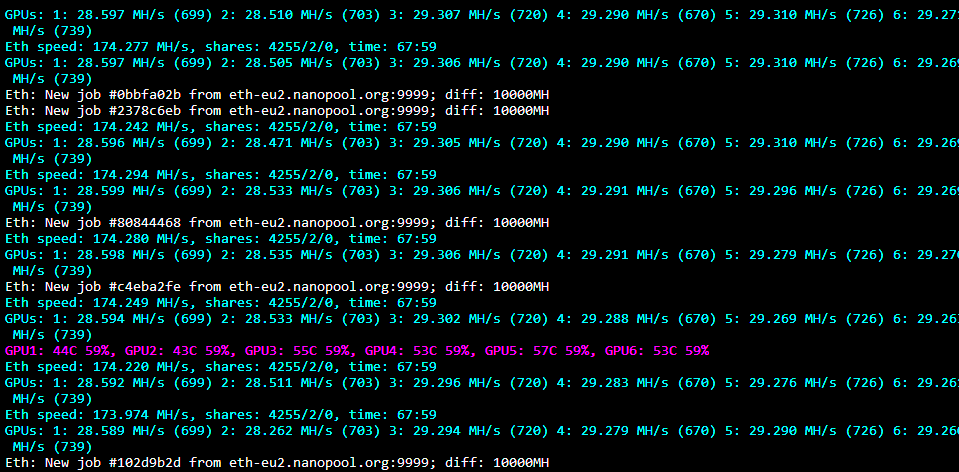
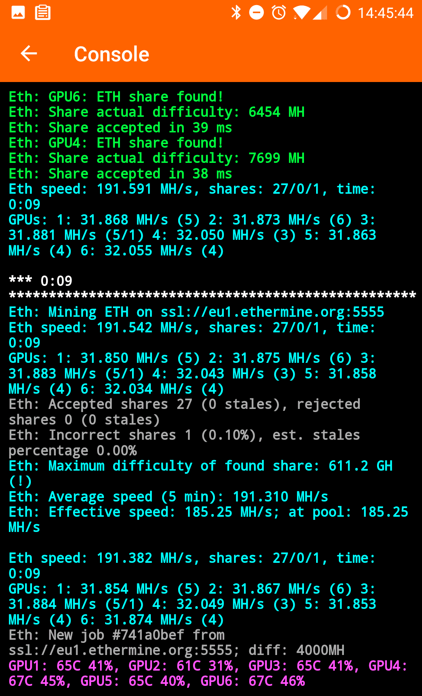

Самый быстрый Ethereum/Ethash майнер с самой низкой комиссией
PhoenixMiner документация
PhoenixMiner - быстрый майнер для алгоритма ethash (ETH, ETC, Musicoin, EXP, UBQ, Pirl, Ellaism, Metaverse ETP и др.)
Майнер поддерживает как AMD, так и Nvidia карты (в том числе в смешанных майнинг ригах). Он работает под Windows x64 и имеет комиссию для разработчика 0,65% (самую низкую в отрасли). Это означает, что каждые 90 минут майнер будет добывать для его разработчиков в течение 35 секунд.
Работа майнера
Если Вы использовали Claymore's Dual Ethereum miner, Вы можете переключиться на PhoenixMiner с минимальными хлопотами, так как программа поддерживает большинство параметров командной строки и конфигурацию Клеймора в том числе и дуал-майнинг.
Обратите внимание, что PhoenixMiner широко протестирован на многих майнинг фермах, но все еще могут быть некоторые ошибки. Кроме того, разработчики активно работают над разработкой многих новых функций, в особенности в будущих выпусках.
Ниже приведены параметры командной строки для некоторых наиболее популярных пулов и монет:
Для настройки под Эфириум нужно создать или отредактировать файл с расширением .bat. Он создается или редактируется в любом текстовом редакторе.
Вы моежете загрузить PhoenixMiner. с готовыми шаблонами настройки. Не забудьте поменять кошелек.
Примеры:nanopool.org (ETH):
PhoenixMiner.exe -pool eth-eu2.nanopool.org:9999 -wal 0x360d6f9efea21c82d341504366fd1c2eeea8fa9d -worker Phoenix -epsw x -mode 1 -Rmode 1 -log 0 -mport 0 -etha 0 -retrydelay 1 -tt 79 -tstop 89 -tstart 79 -fanmin 30 -coin ethMiningpoolhub (ETH):
PhoenixMiner.exe -pool europe.ethash-hub.miningpoolhub.com:20535 -wal rgzrgz_leo.rgzrgz_leo -epsw x -mode 1 -log 0 -mport 0 -etha 0 -retrydelay 1 -tt 79 -tstop 89 -esm 2 -coin ethdwarfpool.com (ETH):
PhoenixMiner.exe -pool eth-ru2.dwarfpool.com:8008 -wal 0x360d6f9efea21c82d341504366fd1c2eeea8fa9d.Phoenix -mode 1 -Rmode 1 -log 0 -mport 0 -etha 0 -retrydelay 1 -tt 79 -tstop 89 -fanmin 30 -coin ethf2pool.com (ETH):
PhoenixMiner.exe -pool eth.f2pool.com:6688 -wal rgz -worker rgz -epsw x -mode 1 -Rmode 1 -log 0 -mport 0 -etha 0 -retrydelay 1 -tt 79 -tstop 89 -fanmin 30 -asm 2 -coin ethethermine.org (ETH):
PhoenixMiner.exe -pool eu1.ethermine.org:4444 -wal 0x360d6f9efea21c82d341504366fd1c2eeea8fa9d -worker asus -epsw x -mode 1 -log 0 -mport 0 -etha 0 -retrydelay 1 -tt 79 -tstop 89 -coin ethnicehash (ethash):
PhoenixMiner.exe -pool stratum+tcp://daggerhashimoto.eu.nicehash.com:3353 -wal 16p3MvQB7Va2cAPBahvkBePxqQtwTd77sP -pass x -log 0 -retrydelay 1 -tt 79 -tstop 89 -tstart 85 -fanmin 30 -Rmode 1 -proto 4 -stales 0 -fret 1 -rate 1ФОРКИ ЭФИРИУМА
ethermine.org (ETC):
PhoenixMiner.exe -pool eu1-etc.ethermine.org:4444 -wal 0x360d6f9efea21c82d341504366fd1c2eeea8fa9d -worker Phoenix -pass x -log 0 -retrydelay 1 -tt 79 -tstop 89 -tstart 85 -fanmin 30 -Rmode 1 -fret 1 -rate 1 -coin etcdwarfpool.com (EXP):
PhoenixMiner.exe -pool exp-eu.dwarfpool.com:8018 -wal 0x556312c7127299740a1733f491fdc9d55ecd6941 -worker Phoenix -pass x -log 0 -retrydelay 1 -tt 79 -tstop 89 -tstart 85 -fanmin 30 -Rmode 1 -fret 1 -rate 1 -coin expminingpoolhub (MUSIC):
PhoenixMiner.exe -pool europe.ethash-hub.miningpoolhub.com:20585 -wal rgzrgz_leo.rgzrgz_leo -pass x -proto 1ubiqpool (UBIQ):
PhoenixMiner.exe -pool eu.ubiqpool.io:8008 -wal 0xc624c12b61c14aee4ce0ba8cbc0874f0948bc49d -worker Phoenix -pass x -log 0 -retrydelay 1 -tt 79 -tstop 89 -tstart 85 -fanmin 30 -Rmode 1 -fret 1 -rate 1 -coin ubqminerpool.net (PIRL):
PhoenixMiner.exe -pool lb.geo.pirlpool.eu:8004 -wal 0x7350390d1048b5ed1125e3849cee973082ad7ca5 -worker Phoenix -pass x -log 0 -retrydelay 1 -tt 79 -tstop 89 -tstart 85 -fanmin 30 -Rmode 1 -fret 1 -rate 1 -coin pirldodopool.com (Metaverse ETP):
PhoenixMiner.exe -pool etp.dodopool.com:8008 -wal MWSoDUE1km1M6fSbYGy8Sh23998VVh6XHm -worker Phoenix -pass x -log 0 -retrydelay 1 -tt 79 -tstop 89 -tstart 85 -fanmin 30 -Rmode 1 -fret 1 -rate 1 -coin etpminerpool.net (Ellaism):
PhoenixMiner.exe -pool ella.minerpool.net:8002 -wal 0x34506b2a53a8192696af0f38a81c1533f8edc06b -worker Phoenix -pass x -log 0 -retrydelay 1 -tt 79 -tstop 89 -tstart 85 -fanmin 30 -Rmode 1 -fret 1 -rate 1 -coin ellaПРИМЕР ДУАЛ-МАЙНИНГА
ETH на ethermine.org ETH + Blake2s на Nicehash:
PhoenixMiner.exe -pool ssl://eu1.ethermine.org:5555 -wal 0x360d6f9efea21c82d341504366fd1c2eeea8fa9d.rig1 -proto 3 -dpool blake2s.eu.nicehash.com:3361 -dwal 3HHG3zpxP4AmbKDR9iRy1c2bqAb4WKhNwm -dcoin blake2sПояснение:
PhoenixMiner.exe -pool ssl://eu1.ethermine.org:5555 -wal адресс_eth_кошелька.имя_воркера -proto 3 -dpool blake2s.eu.nicehash.com:3361 -dwal адрес_btc_на_nicehash -dcoin blake2s* Высоко оптимизированные ядра OpenCL и CUDA для максимальной скорости добычи ethash
* Самая низкая плата разработчику - 0,65% (35 секунд добыча "defvee" каждые 90 минут)
* Расширенная статистика: фактическая сложность каждой шары, а также эффективные мощности в пулах
* Поддержка AMD Vega, 580/570/480/470, 460/560, Fury, 390/290 и более ранние АМД видеокарты с достаточным количеством видеопамяти
* Поддержка Nvidia серии 10x0 и 9x0, а также старых карт с достаточным количеством видеопамяти
* Генерация файлов DAG в видеокарте для более быстрого запуска и переключения эпох DAG
* Поддерживает все ethash майнинг пулы и stratum протоколы, включая соло майнинг по HTTP
* Поддержка безопасных соединений пула (например, ssl://eu1.ethermine.org:5555) для предотвращения IP-атак
* Подробная статистика, включая хэшрейт отдельных карт, шары, температуру и скорость вентилятора
* Настройка GPU для видеокарт AMD для достижения максимальной производительности в Вашей ферме
* Поддержка devfee на альтернативных ethash валютах, как ETC, EXP, Music, UBQ, Pirl, Ellaism, Metaverse ETP, Akroma, WhaleCoin, и Victorium. Это помогает избегать смену DAG файла, а также позволяет использовать старые карты с маленькой VRAM (видеопамятью) или низкий хэшрейт на текущих эпохах Dag (например GTX970, 280X).
* Полная совместимость с Claymore's Dual Ethereum miner, включая большинство параметров командной строки, файлы конфигурации, удаленный мониторинг и управление.
* Дополнительные функции ожидаются в ближайшее время!
Системные требования
PhoenixMiner требует Windows x64 (Windows 7, Windows 10 и т. д.). или Linux.
PhoenixMiner поддерживает двойной майнинг.
Во время работы майнера можно использовать некоторые интерактивные команды. Нажмите клавишу 'h', пока окно консоли майнера имеет фокус ввода клавиатуры для просмотра списка доступных команд.
Все интерактивные команды также перечислены в конце следующего раздела.
Обратите внимание, что PhoenixMiner поддерживает большинство опций командной строки Claymore's Dual Ethereum miner.
Таким образом, Вы можете использовать те же параметры командной строки, что и те, которые Вы использовали бы с майнером Клеймора.
-pool <host:port> адрес пула (добавить имя хоста с SSL:// для SSL пула, или http:// для соло майнинга)
-Wal < кошелек> Ethash кошелек (некоторые пулы требуют имя пользователя и / или работника)
-pass <пароль> пароль Ethash (большинство пулов не требуют его, используйте 'x' в качестве пароля, если не уверены)
-worker <имя> имя работника (большинство пулов принимают его как часть кошелька)
-proto <n> выбирает Тип протокола stratum для пула:
1: miner-proxy stratum spec (например для пула coinotron)
2: eth-proxy (например dwarfpool, nanopool) - это значение по умолчанию, работает для большинства пулов
3: qtminer (например для пула ethpool)
4: EthereumStratum/1.0.0 (например для nicehash)
-coin <монета> Ethash монета. Чтобы использовать ее для devfee, для избежания переключения DAG:
auto: пытаться определить автоматически (по умолчанию) eth: Ethereum etc: Ethereum Classic akroma: Akroma ath: Atheios aura: Aura b2g: Bitcoiin2Gen clo: Callisto dbix: DubaiCoin egem: EtherGem ella: Ellaism esn: Ethersocial etcc: EtherCC etho: Ether-1 etp: Metaverse ETP etz: EtherZero exp: Expanse gen: Genom hbc: Hotelbyte Coin mix: Mix moac: MOAC music: Musicoin nuko: Nekonium pgc: Pegascoin pirl: Pirl reosc: REOSC ubq: UBIQ vic: Victorium whale: WhaleCoin yoc: Yocoin
-stales <n> Отправить stales (устаревшие) шары в пул: 1 – да (по умолчанию), 0 -Нет
-ftimeout <n> Переподключиться, если новое задание не будет получено в течение (n) секунд (по умолчанию: 600)
-ptimeout <n> вернуться к основной пул после (N) минут. Настройка по умолчанию -30 минут; установите 0, чтобы отключить автоматическое переключение обратно на основной пул.
-gwtime <n> период перепроверки для Майнинга Соло / GetWork (по умолчанию: 200 мс)
-fret <n> переключиться на следующий пул после (N) неудачных попыток подключения (по умолчанию: 3)
-rate <n> сообщить хэшрейт в пул: 1-Да, 0-Нет (1 по умолчанию)
Используйте -dpool, -dwal, -dpass, -dworker, и -dcoin опции чтобы установить подключение к Blake2s пулу.
-dpool <адрес:порт> адрул дуал-майнинг пула
-dwal <кошелек> кошелек для дуал-монеты
-dpass <пароль> пароль пула дуал-майнинга(многие пулы не трубют паролья, используйте 'x', если пароль не требуется)
-dworker <идентификатор фермы> имя воркера для дуал-пула
-dcoin blake2s В настоящее время поддерживается только алгоритм blake2s для дуал-майнинга.
-dstales <n> Отправлять stales шары в дуал-майнинг пул: 1 - да (по умолчанию), 0 - нет
-sci установить интенсивность майнинга дуал-монеты.
ПРИМЕР ДУАЛ-МАЙНИНГА:
PhoenixMiner.exe -pool ssl://eu1.ethermine.org:5555 -wal 0x360d6f9efea21c82d341504366fd1c2eeea8fa9d.rig1 -proto 3 -dpool blake2s.eu.nicehash.com:3361 -dwal 3HHG3zpxP4AmbKDR9iRy1c2bqAb4WKhNwm -dcoin blake2sТестовый режим
-bench [<n>], -тест [<n>] тестоВый режим, дополнительно укажите эпоху DAG. Используйте это, чтобы проверить Вашу ферму.
Удаленный мониторинг
-cdm <n> Выбирает уровень поддержки дистанционного мониторинга CDM:
0: отключено
1: только для чтения - это по умолчанию
2: полный (используется только для безопасных соединений)
-cdmport <порт> Установите порт удаленного мониторинга CDM (по умолчанию 3333). Вы также можете указать <ip_addr:порт> если у вас есть безопасное VPN-подключение и Вы хотите привязать к нему порт CDM
-cdmpass <пароль> установить пароль удаленного мониторинга CDM
-cdmrs перезагрузить настройки, если конфигурация .txt была отредактирована / загружается удаленно
-amd использовать только карты AMD
-nvidia использовать только карты Nvidia
-gpus <123 ..н> используйте только указанные видеокарты (если их более 10, то отделяйте их запятой)
-mi <n> установите интенсивность майнинга (от 0 до 14; 12 по умолчанию для новых ядер). Вы можете указать эту опцию для каждого GPU отдельно.
-gt <n> Установите параметр тюнинга GPU (от 8 до 400). Значение по умолчанию - 15. Вы можете изменить настройку параметров в интерактивном режиме с помощью клавиш ' + ' и ' - ' в окне консоли майнера.
Вы можете указать эту опцию для каждого GPU.
-sci <n> установить интенсивность для дуал-майнинга (1 - 1000). По умолчанию 30. Если вы увеличиваете показатель -sci, то хешрейт второй (дуал) монеты будет увеличен, но будет больше потребление электроэнергии и/или ниже хешрейт у первой (основной) ethash монеты.
Вы можете менять этот параметр интеравтивно во время работы программы используя клавиши '+' и '-' в активном окне работающего майнера.
Можно установить эту опцию для каждой карты отдельно. Можно установить -sci в 0, тогда майнер сам сделает auto-tuning чтобы определить наилучшее значени, при попытке максимизировать хешрейт основной монеты
-clkernel <n> Тип ядра OpenCL: 0 - общее, 1 - оптимизированное, 2-альтернативное (1 по умолчанию)
Вы можете указать эту опцию для каждого GPU.
-clgreen <n> Используйте энергоэффективные ("зеленые") ядра (0: Нет, 1: да; по умолчанию: 0).
Вы можете указать эту опцию для каждого GPU. Обратите внимание, что вы должны запустить автонастройку снова, так как оптимальные значения GT совершенно разные для зеленых ядер
-clNew <n> использовать новые ядра AMD, если они поддерживаются (0: Нет, 1: да; по умолчанию: 1). Вы можете указать эту опцию для каждого GPU.
-clf <n> синхронизация ядер AMD kernel (0: никогда, 1: периодическая; 2: всегда; по умолчанию: 1). Вы можете указать эту опцию для каждого GPU.
-nvNew <n> используйте новые ядра Nvidia, если они поддерживаются (0: Нет, 1: да; по умолчанию: 1). Вы можете указать эту опцию для каждого GPU.
-nvf <N> синхронизация ядер NVIDIA kernel (0: никогда, 1: периодическая; 2: всегда; по умолчанию: 1). Вы можете указать эту опцию для каждого GPU.
-mode <n> режим майнинга (0: - дуал майнинг; 1: только одна ethash монета.
-list список обнаруженных GPU устройств и Выход
-minRigSpeed <n> перезапустить майнер, если средняя скорость 5 мин ниже <n> MH/s
-eres <n> Выделяет буфер для DAG файла, достаточно большие, заранее для (n) будущих DAG эпох (по умолчанию: 2) избегайте Выделения новых буферов на каждом переключении эпохи DAG, это должно повысить стабильность переключения DAG файла.
Вы можете указать эту опцию для каждого GPU.
-lidag <n> замедляет генерацию DAG, чтобы избежать сбоев при переключении DAG эпох (0-3, по умолчанию: 0 - быстро, 3 - медленно). Вы можете указать эту опцию для каждого GPU.
В настоящее время опция работает только на картах AMD
-Gser <n> Сериализация создания DAG на нескольких видеокартах (0 - Нет сериализации, все видеокарты генерируют DAG одновременно (по умолчанию); 1-частичное перекрытие генерации DAG на каждом GPU; 2 - отсутствие перекрытия (каждый GPU ждет, пока предыдущий закончит генерацию DAG); 3-10 - от 1 до 8 секунд задержки после каждого поколения DAG GPU перед следующим)
-Wdog <n> включить сторожевой таймер: 1 - Да, 0 - Нет (по умолчанию 1). Таймер периодически проверяет, если какой-либо из видеокарт остановлен, и если это происходит, перезапускает майнер (см.-rmode) параметр командной строки для перезагрузки)
-Rmode <n> Выбирает режим перезапуска при сбое или зависании GPU:
0: отключено - майнер не перезапускается
1: перезапуск с теми же параметрами командной строки (по умолчанию)
2: перезагрузка (Выключает майнер и Выполняет reboot.bat)
-gpureset <n> полностью сбросить все настройки GPU при паузе (0-Нет, 1-да; по умолчанию: нет, кроме 1080Ti)
Вы можете указать эту опцию для каждого GPU.
-altinit использовать альтернативный способ инициализации карт AMD для предотвращения сбоев запуска
-log <n> Выбор режима файла журнала:
0: отключено - файл журнала записываться не будет
1: записать файл журнала, но не показывать отладочные сообщения на экране (по умолчанию)
2: запись файла журнала и отображение сообщения отладки на экране
-logfile <имя> задайте Имя файла журнала. Если Вы поместите звездочку (*) в Имени файла журнала, он будет заменять текущую дату/время и создавать уникальное имя каждый раз, когда стартует PhoenixMiner.
Если в имени файла журнала нет звездочки, новые записи журнала будут добавлены в конец того же файла.
Если Вы хотите использовать один и тот же файл журнала, но его содержимое перезаписывалось при каждом запуске майнера, то поместите знак доллара ($) в Имя файла журнала (например: -logfile my_log.txt$)
-logdir <путь> укажите путь, по которому будут создаваться файлы журнала
-logsmaxsize <n> Максимальный размер файлов журнала в МБ. Значение по умолчанию -200 Мб (используйте 0, чтобы отключить ограничение).
При запуске, если файлы журнала больше указанного предела, самые старые удаляются. Если Вы используете один журнал, то он сокращается, если превышает лимит и создается новый.
-timeout <n> перезапустить майнер по -rmode после (N) минут
-pauseat <часы:минуты> Пауза майнера в чч::мм (24 часовое время). Вы можете указать несколько раз: -pauseat 6:00,12:00
-resumeat <часы:минуты> Возобновить майнер в чч::мм (24 часовое время). YВы можете указать несколько раз: -resumeat 8:00,22:00
-gswin <n> Окно статистики майнера (5-30 сек; по умолчанию: 15; используйте 0, чтобы вернуться к pre-2.8 способу отображения мгновенной статистики)
-GSI <n> интервал скорости статистики (5-30 сек; по умолчанию: 5; используйте 0, чтобы отключить). Подробная статистика все еще будет показываться каждые 45 секунд и не зависит от значения -gsi
-gpow <n> снизить использование GPU до (n%) от максимума (по умолчанию: 100). Если Вы уже используете -mi 0 (или другое низкое значение), используйте -li.
Вы можете указать эту опцию для каждого GPU.
-li <n> другой способ снизить использование GPU. Большие значения (n) означают меньшую загрузку GPU; по умолчанию 0.
Вы можете указать эту опцию для каждого GPU.
-resetoc сброс настроек разгона HW при запуске
Параметры аппаратного управления (только карты AMD; Вы можете указать эти параметры для каждого GPU.):
-tt <n> установить целевую температуру управления вентилятором (специальные значения:0 - Нет контроля HW на всех картах,
1-4-только мониторинг на всех картах с интервалом 30-120 секунд, отрицательные значения - фиксированная скорость вентилятора при (n%)
-fanmin <n> установить минимальную скорость управления вентилятором в % (-1 по умолчанию)
-fanmax <n> установить максимальную скорость вентилятора в % (-1 по умолчанию)
-tmax <n> установить максимальную температуру управления вентилятором (0 по умолчанию)
-powlim <n> установить ограничение мощности GPU в % (от -75 до 75, 0 по умолчанию)
-cclock <n> установить разгон ядра GPU в МГц (0 по умолчанию)
-cvddc <n> установить напряжение ядра GPU в МВ (0 по умолчанию)
-mclock <n> установить разгон памяти GPU в МГц (0 по умолчанию)
-mvddc <n> установить напряжение памяти GPU в МВ (0 по умолчанию)
-tstop <n> приостановить GPU при температуре >= (n) (0 по умолчанию; т. е. Выкл)
-tstart <n> возобновление работы GPU, когда температура <= (n)(0 по умолчанию; т. е. Выключено)
Прочие параметры:
-v,--version показать версию и Выйти
-h,--help Показать информацию о параметрах командной строки и завершить работу
Некоторые параметры PhoenixMiner могут предоставлять одинаковые или разные настройки для всех видеокарт.
Например, чтобы указать значение -gt для всех карточек, нужно написать -gt 90, но если Вы хотите указать другое значение GT для каждой из карт, используйте такой синтаксис:
-gt 20,15,40,90,90 для пяти карточек. Это создало бы gt 20 для первой карты, 15 для второй и так далее. Если указано меньше значений, чем видеокарт, остальные видеокарты будут использовать значения по умолчанию
Кроме того, во время работы майнера можно использовать следующие интерактивные команды
в окне консоли нажатием одной из следующих клавиш:
s - отображает подробную статистику
1-9 - приостановка / возобновление GPU1 ... GPU9
p - пауза/возобновить весь майнер
+,- Увеличение / уменьшение параметра разгона GPU
g - сброс параметра разгона GPU
x - Выберите GPU для ручной или автоматической настройки -GT
z - запустить процесс автоматической настройки AMD
R - перезагрузка epools.txt и переключиться на основной пул ethash
e - Выберите текущий пул ethash
y - включить режим Вычислений AMD, если он Выключен на некоторых видеокартах
с - перезагрузить config.txt файл (некоторые настройки требуют перезапуска)
h - отобразить краткую справку
Phoenix miner полностью совместим с Claymore's Dual Ethereum miner для дистанционного мониторинга и управления. Это означает, что Вы можете использовать любые инструменты Claymore's Dual Ethereum miner, в том числе приложение "Remote manager", которое является частью пакета Claymore.
PhoenixMiner работает над гораздо более мощными и безопасными функциями удаленного мониторинга и управления и применением центра управления, который позволит лучше управлять Вашими фермами дистанционно.
Обратите внимание, что PhoenixMiner поддерживает те же файлы конфигурации, что и Claymore's Dual Ethereum Miner таким образом, Вы можете использовать существующие файлы конфигурации без каких-либо изменений.
Вместо того, чтобы использовать параметры командной строки (.bat файлы), Вы также можете управлять PhoenixMiner с помощью файлов конфигурации.
Если Вы запустите PhoenixMiner.exe без каких-либо параметров, он будет искать файл config.txt в текущем каталоге и будет читать его параметры командной строки. Если Вы хотите, Вы можете использовать файл с другим именем, указав его имя в качестве единственного параметра командной строки при запуске PhoenixMiner.exe.
Вы найдете пример config.txt в каталоге PhoenixMiner.
Вместо указания пулов непосредственно в командной строке можно использовать конфигурации файл для этого называется epools.txt. Там Вы можете указать один пул в строке (Вы найдете пример epools.txt в каталоге PhoenixMiner).
Преимущества использования config.txt и epools.txt:
- Если у вас есть несколько ферм, можно скопировать все настройки с этими файлами
- Если Вы управляете фермами с помощью удаленного управления, Вы можете менять пулы и даже параметры майнера.
Вот некоторые важные замечания параметров аппаратного управления:
* Если Вы укажете одно значение (например -cvddc 1150), оно будет использоваться на всех картах. Укажите другое
значение для каждой карты, (отдельно с запятой): - cvddc 1100,1100,1150,1120,1090
Если указанные значения меньше числа видеокарт, остальные видеокарты будут использовать значения по умолчанию.
* Мы тестировали только на относительно недавних видеокартах AMD (RX460/470/480/560/570/580 и Вега).
Ваши результаты могут отличаться в зависимости от старых видеокарт.
* Бета-драйверы blockchain от AMD показывают довольно нестабильные результаты - частота напряжения не применяется длительно или возвращается к умолчанию через некоторое время. Для достижения наилучших результатов используйте новейшие драйверы от AMD:
18.1.1 или 18.2.1, где исправлено большинство ошибок.
* -tmax указывает температуру, при которой GPU должен начать снижать интенсивность (потому что вентиляторы не могут справиться с тепловыделением).
* При использовании других программ для аппаратного управления возможны и вполне вероятные конфликты.
Используйте например, GPU-Z для мониторинга напряжений и т. д.
MSI Afterburner, кажется, работает хорошо (так что Вы можете использовать его для контроля видеокарт NVIDIA, а видеокарты AMD регулировать через PhoenixMiner).
* Это должно быть очевидно, но все же: если данный разгон / напряжение вызывают сбои / подвисания / неправильные шары при использовании сторонней программы, то эти настройки будут такими же нестабильными при применении через опции управления PhoenixMiner.
* Если у вас есть проблемы с параметрами аппаратного управления PhoenixMiner, и Вы использовали что-то другое, чтобы контролировать разгон, вентиляторы и напряжения (MSI Afterburner, OverdriveNTool и т. д.), и результат Вас устраивает, то вероятно, лучше продолжать использовать эти программы и игнорировать параметры аппаратного управления PhoenixMiner (или использовать только некоторые из них и дальше дорабатывать остальные настройки своими сторонними инструментами).
Эта программа предоставляется "как есть", используйте ее на свой страх и риск!
Вопрос 1: зачем еще один майнер?
Ответ: мы чувствуем что конкуренция хороша для пользователя. В первых релизах PhoenixMiner мы сосредоточились на основных функциях и на скорости майнинга, но сейчас мы работаем над тем, чтобы майнеру было проще и удобнее использовать программу.
Вопрос 2: можно ли запускать несколько экземпляров PhoenixMiner на одной платформе?
Ответ: Да, но убедитесь, что каждый Видеокарта используется одним майнером (используйте -GPU, - amd или -nvidia параметры командной строки, чтобы ограничить GPU, которые данный экземпляр PhoenixMiner фактически использует).
Другая возможная проблема состоит в том, что Все экземпляры будут использовать удаленный порт CDM по умолчанию 3333, что предотвратит надлежащее дистанционное управление для всех, кроме первого экземпляра. Чтобы устранить эту проблему, используйте параметр командной строки -cdmport, чтобы изменить значение по умолчанию для удаленного порта CDM.
Вопрос 3: можно ли запускать PhoenixMiner одновременно на одной платформе с другими майнерами?
Ответ: Да, но см. ответ к предыдущему вопросу в разделе "Как избежать проблем".
Вопрос 4: что такое устаревшая шара (stale share)?
Ответ: монеты ethash обычно имеют очень маленькое среднее время решения блока (15 секунд в большинстве случаев).
С другой стороны, для достижения Высокой скорости добычи мы должны держать GPU все время занятым, поэтому мы не можем слишком часто переключать текущую работу. Если наша видеокарта находит решение как раз после того как кто-то еще уже нашел решение для текущего блока, то наша шара (доля) является устаревшей. В идеале, устаревшие шары должны быть минимальными. Обычно пулы не дают никакого вознаграждения за несвежие шары, а те пулы, что делают вознаграждение за несвежие шары, дают только частичное вознаграждение. Если шара доставляется до пула слишком долго после завершения блока, то пул может даже полностью отклонить ее.
Вопрос 5: почему PhoenixMiner сообщает процент несвежих шар меньше, чем указано на пуле?
Ответ: PhoenixMiner может только обнаружить устаревшие шары, которые были выявлены после того, как он получил новую работу (т. е. "очень несвежие") шары. Существует Дополнительная задержка в самом пуле, и в сетевом подключении, которые замедляют общий показатель, даже если он был технически найден до конца блока с точки зрения майнера. Пулы сообщают что шары приняты или отклонены, но майнер не может определить устаревшие шары из пула.
Вопрос 6: что означает "фактическая сложность шары" ("actual share difficulty"), показанная PhoenixMiner, когда находится шара?
Ответ: это позволяет вам увидеть, насколько близко Вы были к нахождению фактического блока (редкое событие в эти дни для большинства майнеров с разумными размерами майнинг ригов). Вы можете найти текущую сложность для данной монеты на таких сайтах, как whattomine.com а затем проверить, не превысили ли вы ее с максимальной сложностью шары. Если вы это сделали, это означает, что именно Вы обнаружили блок.
Вопрос 7: в чем смысл "эффективной скорости" ("effective speed") показываемой в статистике PhoenixMiner?
Ответ: это мера фактически найденных шар, которая определяет, как пул видит Ваш хэшрейт. Это число должно быть близко к средней мощности Вашей фермы (обычно на 2-4% ниже) в зависимости от текущей удачи в поиске шар. Эта статистика бессмысленна в первые несколько часов после запуска майнера и выравнивается до реального значения через некоторое время.
Вопрос 8: почему эффективная мощность на пуле показывается ниже, чем показывает PhoenixMiner?
Ответ: для этого есть две причины: устаревшие шары и удача. Устаревшие шары вознаграждаются только около 50-70% от всего пула. Фактор удачи должен выровнять себя с течением времени, но это может занять иногда несколько дней.
Если эффективная хэш-скорость, сообщаемая пулом, постоянно ниже чем мощности Вашего оборудования (более чем на 5-7%), то Вы должны смотреть на количество устаревших шар (stale shares) и на среднее время принятия шар. - Если оно Выше 100 мс, попробуйте найти пул, который является рядом с вами географически, чтобы снизить задержку сети. Можно также перезапустить ферму или попробовать другой пул.
Проблема 1: я использую AMD RX470/480/570/580 или аналогичную карту, и мой хэшрейт значительно упал в прошлые несколько месяцев для Ethereum и Ethereum classic!
Решение: это известная проблема с некоторыми картами. Для новых карт (RX470/480/570/580), это может решится с помощью специального драйвера blockchain от AMD (или попробуйте последние версии драйверов, они могут включить исправление). Для старых карт нет обходного пути, но Вы все равно можете добывать EXP, Musicoin, UBQ или PIRL с той же скоростью, что Вы добыли ETH до падения хэшрейта.
Проблема 2: моя карта Nvidia GTX9x0 показывает очень низкую хэш-скорость под Windows 10!
Решение: пока есть (из извитых) только одно решение. Оно заключается в том, чтобы отказаться от ОС Windows 10 для этих карт и использовать Windows 7.
Проблема 3: я использую карту Nvidia GTX970 (или аналогичную), и мой хэшрейт резко упал для Ethereum или Ethereum classic!
Решение: GTX970 имеет достаточно VRAM (видеопамяти) для больших Dag файлов, но его хэшрейт падает, когда увеличивается Размер DAG и он превышает 2 ГБ. В отличие от карт на основе AMD Polaris, для этого нет обходного пути.
Мы рекомендуем использовать эти карты для майнинга EXP, Musicoin, UBQ или PIRL с той же скоростью что Вы использовали для ETH до падения производительности.
Проблема 4: я не вижу некоторые из моих карт (или их скорость вентилятора и температуры) при использовании Windows Remote Desktop (RDP)!
Решение: это известная проблема с RDP. Вместо этого используйте VNC или TeamViewer.
Проблема 5: на Windows 10, если Вы нажмете внутри консоли PhoenixMiner, то она зависает!
Решение: это известная проблема в Windows 10, связанная с так называемой функцией "быстрого редактирования". В версии PhoenixMiner 2.6, QuickMode отключен по умолчанию, так что Вы не должны испытывать эту проблему. Если проблема все еще возникает, то читайте здесь, как решить ее: https://stackoverflow.com/q/33883530 (англ.)
Проблема 6: сразу после запуска PhoenixMiner перестает работать и появляется сообщение " обнаружен отладчик" ("debugger detected")
Решение: если у вас есть только карты Nvidia, добавьте опцию -nvidia в PhoenixMiner в командную строку exe-файла.
Если у вас есть только карты AMD, добавьте опцию -amd в командную строку.
Проблема 7: PhoenixMiner показывает ошибку после Выделения DAG буфера и завершает работу.
Решение: если у вас несколько видеокарт, убедитесь, что минимальный размер файла подкачки Windows установлен на минимум 16 ГБ. Если это не помогает, запустите PhoenixMiner, запустив .Bat, который находится в папке с майнером. Необходимо изменить адрес Кошелька, который указан в .bat файле и убедиться, что майнер добывает по Вашему адресу. Кроме того, убедитесь, что все строки, начиная с setx не комментируются (т. е. не начинаются с команды REM).
Проблема 8: майнер иногда зависает, когда меняется эпоха DAG.
Решение: во время создания DAG видеокарты загружаются больше, чем при нормальной работе. Если Вы имеете разогнанную карту или карту с занижением энергопотребления, то создание DAG файла может заставить программу зависнуть. Еще одна возможная причина остановки программы (особенно, если вся система зависает) - это большее энергопотребление всей системы во время создания DAG файлов.
Вы можете снизить скорость генерации DAG, указав -lidag
в параметре командной строки. Возможные значения: 0 (без замедления), 1, 2 и 3 (максимальное замедление).
Для того, чтобы проверить, что Ваша ферма будет стабильна во время генерации DAG, запустите его в тестовом режиме
указав параметр командной строки -bench 170. Затем каждый раз при нажатии клавиши 'd' майнер перейдет к следующей эпохе DAG, и Вы сможете увидеть, является ли текущие настройки стабильными во время смены нескольких поколений DAG. Если ферма работает не стабильно при смене эпохи DAG, то Вы можете попробовать изменить параметры командной строки -lidag и -eres, пока не будет достигнута желаемая стабильность.
Удачного майнинга!
Надеемся, что это руководство поможет вам получить некоторые драгоценные MH/s.
Проект PhoenixMiner представляет самые последние версии программного обеспечения (исправляет все ошибки и баги предыдущих версий)! Поэтому если у Вас старая версия, мы настоятельно советуем скачать последнюю версию Phoenix Miner по ссылкам ниже, так как с каждым выходом новой версии добыча Эфира становится выгоднее!
Ресурсы для разработчиков